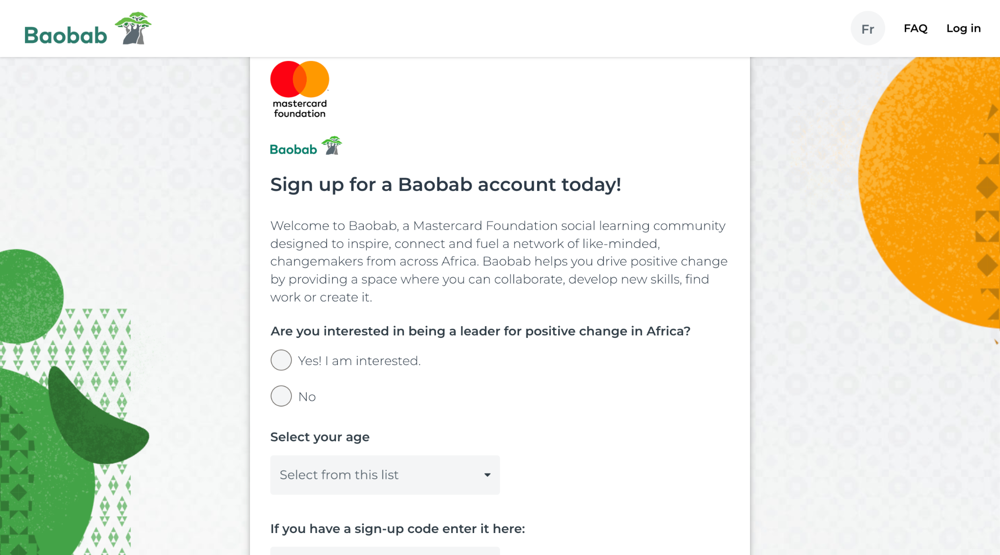
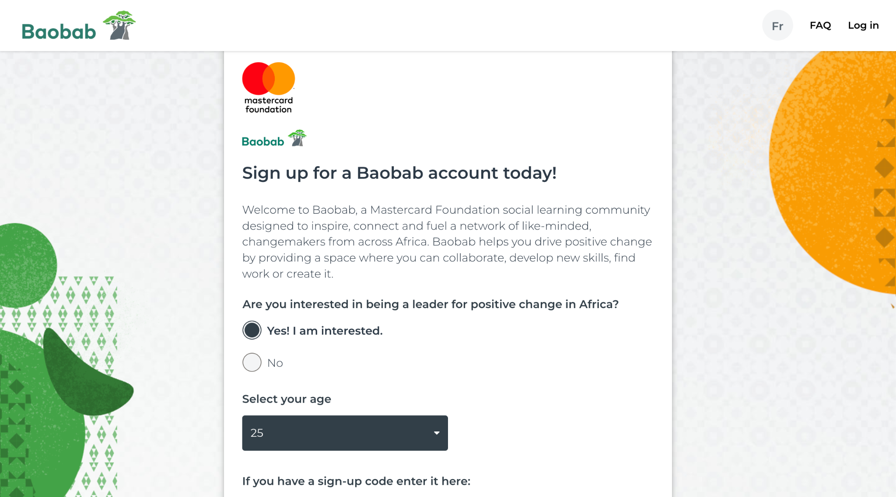
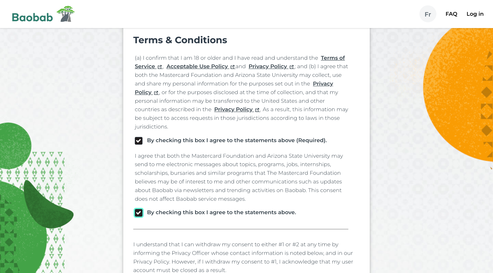
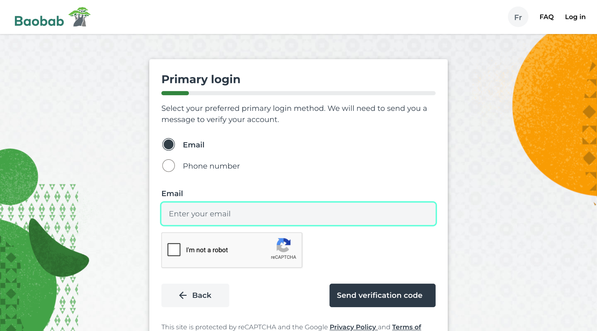

Start your sign-up
Open the Baobab sign-up page. Answer the first questions shown on the form, including whether you are interested in being a leader for positive change in Africa and your age. If you have a sign-up code, you can enter it in the field provided.

Complete the initial questions
Select the options that apply to you and continue through the sign-up form.

Review the Terms & Conditions
Read the Terms & Conditions and related policies. The first agreement shown is required to continue. The page also includes a separate consent option for receiving electronic messages.

Choose your primary login method
Select Email or Phone number as your preferred primary login method. Baobab will use this to send you a message to verify your account.

Enter your details and verify your account
Enter the email address or phone number you want to use, complete the verification check shown on the page, and select Send verification code. Follow the verification instructions you receive.
Still need help?
If you run into a problem while creating your account, tell Support what happened.
Contact Support